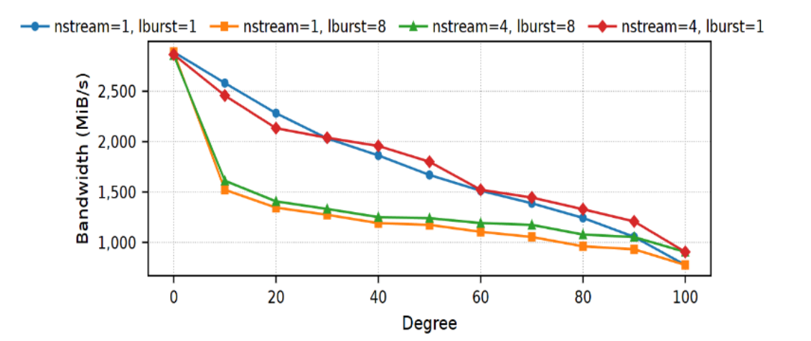
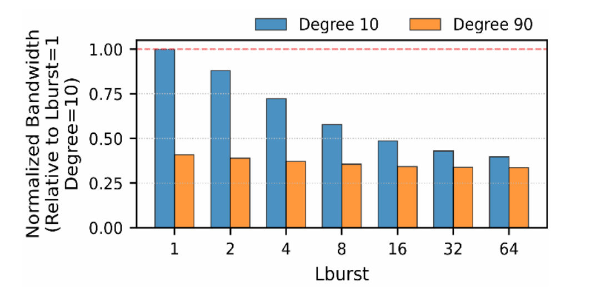
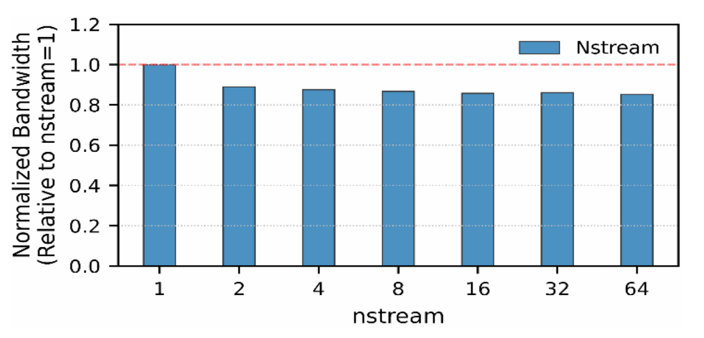

<div id="page-kcc2026" class="page">
  <div class="detail-page">
    <div class="detail-inner">
      <div class="detail-badges anim">
        <span class="paper-badge badge-kcc">KCC 2026</span>
        <span class="paper-badge badge-award">🎤 Oral Presentation</span>
      </div>
      <h1 class="detail-title anim">
        SSD 물리적 단편화의 정량적 제어 기법
      </h1>
      <div class="detail-meta anim">
        한국정보과학회 KCC 2026 &nbsp;·&nbsp; NVMeVirt &nbsp;·&nbsp; SPF Model &nbsp;·&nbsp; Physical Fragmentation &nbsp;·&nbsp; FTL
      </div>
      <div class="detail-divider"></div>
      <div class="anim">
        <div class="detail-section-label">Overview</div>
        <div class="detail-body">
          <p>현대 고성능 SSD는 다수의 채널과 다이를 활용한 내부 병렬성으로 최고 성능을 달성하지만, I/O 환경에서
          발생하는 <strong>physical fragmentation</strong>은 이러한 병렬성을 훼손해 치명적인 성능 저하를
          유발합니다. 기존 연구들은 상용 SSD FTL의 블랙박스 특성 때문에 physical fragmentation을 간접적으로
          추정하는 데 그쳤습니다.</p>
          <p>본 연구는 소프트웨어 정의 NVMe 에뮬레이터인 NVMeVirt의 FTL 내부를 직접 제어하여, physical
          fragmentation을 정량적으로 유도하고 분석할 수 있는 <strong>SPF(Stochastic Physical Fragmentation) 모델</strong>을
          제안합니다. 충돌 확률(P<sub>degree</sub>), 버스트 길이(L<sub>burst</sub>), 인터리빙 스트림 수(N<sub>streams</sub>)
          라는 세 가지 직교 파라미터로 단편화의 빈도, 구조적 심각도, 스트림 간 간섭을 각각 독립적으로 제어할 수
          있도록 설계했습니다.</p>
          <p style="color:var(--text3); font-size:0.85rem;">※ 이 SPF 모델은 이후 스냅샷 기반 즉시 aging 인프라와 결합되어
          <span onclick="showPage('page-systor')" style="cursor:pointer; color:var(--accent2); border-bottom:1px solid rgba(82,82,184,0.3);">SYSTOR 논문</span>의
          핵심 구성요소로 확장되었습니다.</p>
        </div>
      </div>
      <div class="detail-divider"></div>
      <div class="anim">
        <div class="detail-section-label">Key Contributions</div>
        <div class="contrib-grid">
          <div class="contrib-item">
            <div class="contrib-label">01 / Control</div>
            <div class="contrib-title">FTL 내부 직접 제어</div>
            <div class="contrib-text">physical fragmentation을 0%에서 100%까지 정밀하게 제어하는 메커니즘 제안.</div>
          </div>
          <div class="contrib-item">
            <div class="contrib-label">02 / Analysis</div>
            <div class="contrib-title">파라미터별 독립적 영향 분석</div>
            <div class="contrib-text">Pdegree · Lburst · Nstreams 세 파라미터가 각각 빈도 · 구조적 심각도 · 간섭 정도를 독립적으로 결정.</div>
          </div>
          <div class="contrib-item">
            <div class="contrib-label">03 / Validation</div>
            <div class="contrib-title">단편화-성능 관계 정량 입증</div>
            <div class="contrib-text">physical fragmentation 수준과 순차 읽기 성능 저하 사이의 관계를 실험적으로 검증.</div>
          </div>
        </div>
      </div>
      <div class="detail-divider"></div>
      <div class="anim">
        <div class="detail-section-label">Key Results</div>
        <div class="result-chips">
          <span class="chip">P<sub>degree</sub> 0 → 100: <strong>지속적 대역폭 감소</strong></span>
          <span class="chip">L<sub>burst</sub> 1 → 64: <strong>다이 충돌 심각도 증가</strong></span>
          <span class="chip">N<sub>streams</sub>: <strong>완만한 2차 효과</strong></span>
        </div>
      </div>
      <div class="detail-divider"></div>
      <div class="anim">
        <div class="detail-section-label">Details</div>
        <div class="detail-body">
          <h3 style="font-size:1.1rem; margin-bottom:0.8rem; color:var(--text); font-weight:500;">1. 실험 환경</h3>
          <p>Linux 커널 5.10.0 위에 NVMeVirt를 기반으로 SPF 모델을 구현했습니다. Intel Xeon Gold 5215
          (2.50GHz, 10코어) 2소켓과 379GB DRAM으로 구성된 서버에서, 8채널 × 2웨이(다이 16개), 32KiB
          페이지 크기의 128GiB 가상 SSD를 에뮬레이션했습니다. 성능 측정에는 fio를 사용했으며, O_DIRECT
          플래그와 페이지 캐시 플러시로 OS 캐시 영향을 제거하고 커널 수준 readahead를 비활성화했습니다.
          또한 hugepage 기반의 연속 버퍼를 할당해 호스트 측 I/O 버퍼 단편화 자체를 원천 차단했습니다
          (iodepth=32).</p>
 
          <h3 style="font-size:1.1rem; margin:1.8rem 0 0.8rem; color:var(--text); font-weight:500;">2. Pdegree — 성능 저하를 좌우하는 지배적 변수</h3>
          <p>Pdegree를 0에서 100까지 증가시키자 대역폭은 지속적으로 감소했으며, 이 하락 추세는
          Lburst·Nstreams 설정과 무관하게 모든 조건에서 일관되게 관찰되었습니다. Pdegree가 낮은 구간에서는
          데이터가 여러 다이에 비교적 균등하게 분배되어 내부 병렬성이 유지되지만, Pdegree가 높은 구간에서는
          특정 다이로 I/O가 집중되면서 대역폭 급락과 지연시간 급증이 함께 나타났습니다. 세 파라미터 가운데
          성능 저하 추세를 가장 크게 좌우하는 변수로 확인됐습니다.</p>
 
          <div class="detail-image-container">
            
            <p class="image-caption">그림 2. Degree 0~100 변화에 따른 처리량</p>
          </div>
 
          <h3 style="font-size:1.1rem; margin:1.8rem 0 0.8rem; color:var(--text); font-weight:500;">3. Lburst — 충돌의 구조적 심각도</h3>
          <p>Lburst를 1에서 64로 늘리면 다이 충돌의 지속 시간이 길어지며 대역폭이 추가로 감소했습니다.
          다만 이미 단편화가 심한 조건(Pdegree=90)에서는 Lburst 증가에 따른 하락 폭이 상대적으로 작았는데,
          이는 데이터가 이미 특정 다이에 쏠려 있어 긴 충돌이 사실상 기본 상태로 자리 잡았기 때문입니다.
          즉 Lburst는 Pdegree가 만들어낸 충돌 이벤트의 '무게'를 독립적으로 키우는 역할을 합니다.</p>
 
          <div class="detail-image-container">
            
            <p class="image-caption">그림 3. Lburst 변화에 따른 처리량</p>
          </div>
 
          <h3 style="font-size:1.1rem; margin:1.8rem 0 0.8rem; color:var(--text); font-weight:500;">4. Nstreams — 동시성 간섭을 재현하는 보조 변수</h3>
          <p>동시 다중 스트림 기록을 모사하는 Nstreams는 값이 커질수록 스트림 간 데이터가 FTL 수준에서
          더 깊게 뒤섞여 내부 병렬성을 약화시켰습니다. 다만 성능 저하 폭은 Pdegree·Lburst 대비 완만해,
          극단적인 병목을 직접 유발하기보다는 실제 워크로드의 동시성 간섭을 현실적으로 재현하는 보조
          파라미터로 기능함을 확인했습니다.</p>
 
          <div class="detail-image-container">
            
            <p class="image-caption">그림 4. Nstreams 변화에 따른 처리량</p>
          </div>
 
          <h3 style="font-size:1.1rem; margin:1.8rem 0 0.8rem; color:var(--text); font-weight:500;">5. 결론</h3>
          <p>세 파라미터(Pdegree·Lburst·Nstreams)를 통해 physical fragmentation을 0~100% 범위에서
          정밀하게 유도할 수 있었고, 단편화 수준이 높아질수록 내부 병렬성 저하와 순차 읽기 성능 감소가
          유의미하게 나타남을 실험적으로 입증했습니다. 기존에는 관측이 불가능했던 physical fragmentation을
          재현 가능한 형태로 통제했다는 점에서, SSD 벤치마크 설계·저장장치 성능 평가·단편화 완화 기법
          개발에 활용될 수 있는 기반을 마련했습니다.</p>
        </div>
      </div>
      <div style="margin-top:2rem;" class="anim">
        <a href="pdfs/kcc2026.pdf" class="btn btn-primary" target="_blank">Read Full Paper (PDF)</a>
      </div>
    </div>
  </div>
</div>
